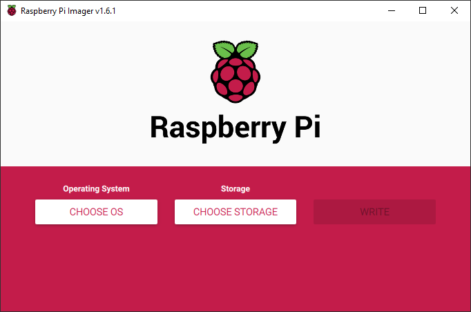
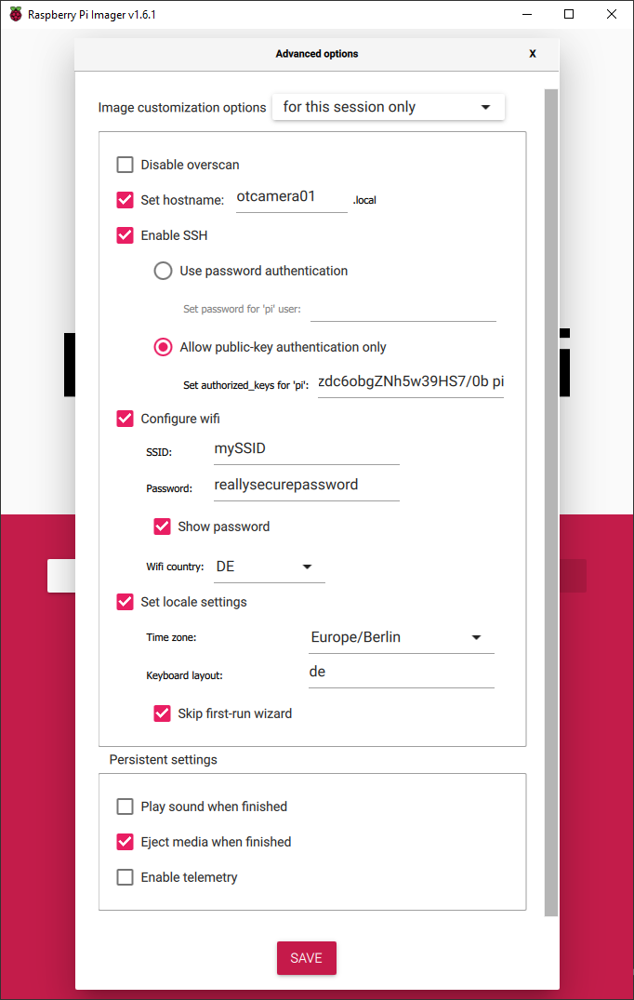

Installation¶
No matter which version you want to install, you will always use a Raspberry Pi as a base. This guide describes the basic steps you need to perform for each version.
You will need:
- Raspberry Pi 2B/3B(+)/4/Zero W and power supply
- Micro SD card (a High Endurance version is recommended)
- SD Card Reader
- Raspberry Pi Imager.
Warning
Even though we have completed the guide ourselves, every PC is different and Raspberry OS can change as well. There are steps described with which you can break your Windows on the PC. You should know what you are doing. We are not responsible for any damage that may occur.
Prepare the SD Card¶
Download and install the Raspberry Pi Imager, insert the SD-Card and start the Imager.

It's recommended to use the Raspberry Pi Imager Advanced Options to do some basic setup. Just press Ctrl+Shift+X on startscreen to access advanced options.
Setup a hostname, enable SSH, either password based or using public-key authentication (recommended!), configure your Wifi credentials and choose the correct locale for Wifi, timezone and keyboard layout. You can also skip the first-run wizard.
How to generate a public key
Generate SSH-Keys for password-less connection. On your desktop computer open a command line terminal (CMD or Powershell on Windows or a bash on Linux) and run
ssh-keygen
to generate a public private key combination. Add the private key to your ssh-agent (you may need to update OpenSSH on Windows).

Now insert the SD card into the PC. Select Raspberry Pi OS Lite (32-bit) as operating system under "Raspberry Pi (Other)". Then select the SD card on which the operating system will be installed.
Warning
It is possible to select not only the SD card, but also the hard drive or SSD where your operating system or other PC data is stored. Make sure that you really select the right SD card. Most of the time, you can tell by the size.
Press the Write button and wait until the Raspberry Pi Imager has completely written and verified your SD card.
Tip
Sometimes the verification may fail. Try another USB port on your PC or another card reader. If this does not help, maybe the SD card is broken.
Setup without Raspberry Pi Imager
-
Add an empty file named
sshto the boot partition to enable ssh on first boot. -
Add your Wifi credentials as described in the Raspberry Pi Documentation
-
Connect to the pi using ssh (
ssh pi@raspberry)to the Pi using password authentication.Create and edit the needed
authorized_keysfile.mkdir -p ~/.ssh nano ~/.ssh/authorized_keysCopy your public key on the host and paste it on the pi, save&close using Ctrl+X - Enter - Y.
Setup the Raspberry¶
Now, take the SD-Card and insert it in the Raspberry. You can now boot the Pi on LAN or within your Wifi by connecting it to the power supply. Try to connect to the Pi using a command line or PowerShell:
ssh pi@otcamera01
If everything is setup correctly, you will be asked to add the host key to the list of known hosts (answer: yes) and you should be connected to your Raspberry Pi.
warning: agent returned different signature type ssh-rsa (expected rsa-sha2-512)
If you are on Windows you may need to update OpenSSH if you ar getting this error:
warning: agent returned different signature type ssh-rsa (expected rsa-sha2-512)
Warning
This guide should run on Windows 10 but you are modifing your system files. Please do not do anything you do not understand! Read the source for more information. We are not liable for any damage you may cause to your system. But we followed the steps ourselves and everything went well.
-
Download the latest OpenSSH for Windows release here. Depending on your Windows version it is probably
OpenSSH-Win64.zip. -
Open Windows Explorer and navigate to your Download folder. You should see the
OpenSSH-Win64.zip. Open an elevated PowerShell via File → Open Windows PowerShell → Open Windows PowerShell as administrator. -
If you copy and paste the following code, you will unzip OpenSSH and overwrite the system's default OpenSSH version.
# Overwrite windows installed bins $openSshBins = (Get-ChildItem 'C:\WINDOWS\System32\OpenSSH\').Name Expand-Archive -Path .\OpenSSH-Win64.zip -DestinationPath . takeown.exe /a /r /f C:\Windows\System32\OpenSSH\ icacls.exe 'C:\Windows\System32\OpenSSH' /grant 'BUILTIN\Administrators:(OI)(CI)F' icacls.exe 'C:\Windows\System32\OpenSSH' /grant 'BUILTIN\Administrators:F' /t Stop-Service ssh-agent $openSshBins | %{ Copy-Item -Path .\OpenSSH-Win64\$_ -Destination C:\Windows\System32\OpenSSH\ } Start-Service ssh-agent

If you have successfully logged in now, we can configure the Raspberry Pi for the OpenTrafficCam.
Update the pi by running apt and reboot.
sudo apt update && sudo apt upgrade -y
sudo reboot
A new version of configuration file is available
If you get this message, don't worry. Keep the local version currently installed, since we changed the ssh server configuration using the RPi Imager.
Reconnect to your pi (open PowerShell and run ssh pi@otcamera01) and run the raspberry configuration tool.
sudo raspi-config
Change the following settings to appropriate values:
- System Options → Password (choose a new password for security reasons)
- Interface Options → Camera → enable
- Interface Options → Serial Port → no → Serial Hardware → yes
Setup without Raspberry Pi Imager
If you did not use the Raspberry Pi Imager, you will need to setup a few more things.
- System Options
- Hostname
- Localization Options
- Timezone (Europe/Berlin)
- WLAN Country (DE)
Exit the raspi-config selecting "Finish" and reboot the Pi afterwards.
Setup Python and Dependencies¶
By default, Raspberry OS light doesn't come with PIP installed. We will need it, to install required packages.
sudo apt install python3-pip -y
Raspberry OS ships with python 2 and python 3. By default python 2 is used. We want to change that to python 3 by adding two single lines to .bashrc.
echo "alias python='/usr/bin/python3'" >> ~/.bashrc
echo "alias pip=pip3" >> ~/.bashrc
source ~/.bashrc
python --version
pip --version
Both commands should state, that they are (using) python 3.(x).
OTCamera requires additional python packages, which need to be installed.
sudo apt install python3-picamera python3-gpiozero pysimpleguiweb -y
pip3 install art psutil
Note
In the future, we would like to offer a ready-to-use image for the Raspberry Pi, which can be easily installed. The setup will then be much easier.